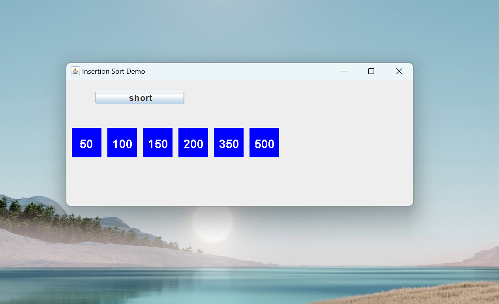
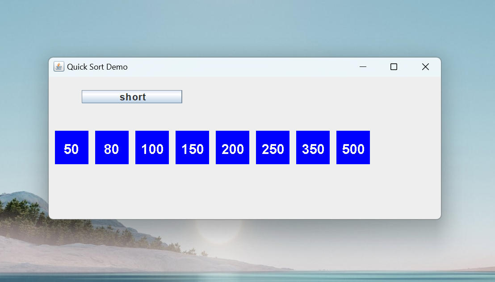
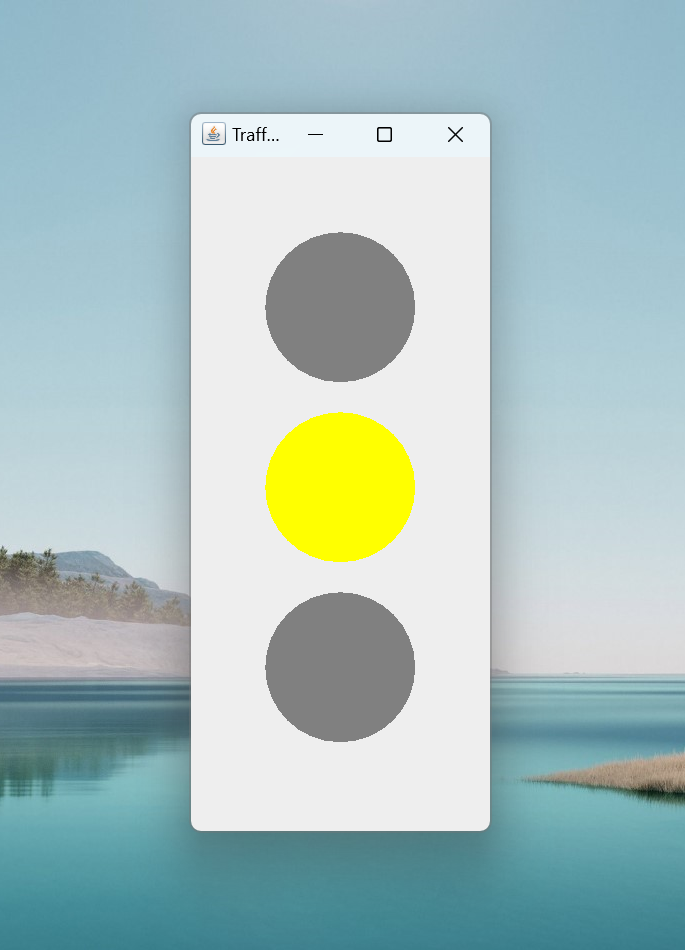

Welcome to my demo page about Java
My name is Quoc and i am a software developer. I will show you some java demo applications.
The first demo app is about Java API with Hibernate and Spring Boot. In this demo app i will
show how to perform SQL database CRUD operations using Hibernate in Spring Boot.
This demo app have a SQL database table customer with info about bank customer, firstname,
lastname, social security number. The table customer has a One-To-Many association with
table accounts. Eack bank customer may have one or many bank accounts. Savings account or
current account. Each account will have field: account type and amount.
We can define Data Models and Repository interfaces for JPA One-To-Many relationship by using
Hibernate in Spring Boot.
We can write Rest Apis to perform following CRUD operations :
POST /api/customers/:id/accounts create new bank account for a bank customer
We can use many different type database with Spring Boot, for example Oracle or PostgresQL, SQl server and etc ...
GET /api/customers/:id/accounts retrieve all accounts of a customer
GET /api/accounts/:id retrieve a account by :id
PUT /api/accounts/:id update a account by :id
DELETE /api/accounts/:id delete a account by :id
DELETE /api/customers/:id delete a customer (and its accounts) by :id
DELETE /api/customers/:id/accounts delete all accounts of a customer
If we choose to use Oracle Database, then we have to do this:
https://github.com/nguyennguyen-wq/JavaAPI
Now, I want to make sure that the functions I wrote in the Controller did
the right thing. And I will create JUNIT Testing. I will use Mockito and Junit.
First, I must put some example values to help me to test the Controller functions.
https://github.com/nguyennguyen-wq/JavaJUnit
https://github.com/Nguyen105/javademo
https://github.com/Nguyen105/javademo
https://github.com/Nguyen105/javademo
https://github.com/Nguyen105/javademo
Software developer Quoc
The next three demo app is about Sorting Algorithms, and i will also use
Java Threads in the demo. The first demo is about
insertion sort algorithm. You can see the demo in screen shoot and also a video below.

You can find the codes for this app in my github repo link below
The next demo app is about
selection sort algorithm,
you can see in a video below
You can find the codes for this app in my github repo link below
The next demo app is about
quick sort algorithm,
you can see in a video and screen shot below

You can find the codes for this app in my github repo link below
The next demo app is about
traffic light simulation,
you can see in a video and screen shot below

You can find the codes for this app in my github repo link below
That is for now, i will create more demo apps when i have time, until
then
Best regards